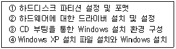
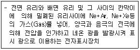

PC정비사-2급 (2011-05-01 기출문제)
1과목: PC유지보수
1. Firmware에 대한 설명으로 잘못된 것은?
- 하드웨어의 기능 추가 및 변경이 불가능
- 하드웨어와 소프트웨어의 중간 성격
- 디지털 시스템에서 널리 사용
- ROM에 저장되는 마이크로컴퓨터 프로그램이 해당
(정답률: 72%)

2. 운영체제의 범주에 속하지 않는 것은?
- MS-DOS
- JINI
- UNIX
- Windows XP
(정답률: 88%)
3. 매킨토시에서 주로 사용되며 유닉스에 기반을 둔 애플의 운영체제는?
- 리눅스
- A/UX
- MAC OS X
- 오라클
(정답률: 79%)
4. PC 운영체제에서 수행하는 주된 기능이 아닌 것은?
- 정보 관리
- 프로세서 관리
- 입출력 관리
- 데이터 타입 정의
(정답률: 72%)
5. Windows XP 에서 제공하는 프로그램의 실행 파일명과 연결이 잘못된 것은?
- 디스크 조각 모음 - dfrg.msc
- 장치관리자 - devmgmt.msc
- 시스템 모니터- msconfig.exe
- 계산기 - calc.exe
(정답률: 74%)
6. Windows XP 설치 CD만을 이용하여 Windows XP를 설치할 때의 과정을 올바른 순서로 나열된 것은?

- ③→①→②→④
- ③→①→④→②
- ①→③→②→④
- ④→①→③→②
(정답률: 77%)
7. 하드디스크를 오래 사용하다보면 파일이 여러 곳에 산재하게 되는데, 이런 파일들을 모아 디스크 액세스 속도를 향상시켜주는 시스템 도구는?
- 디스크 검사
- 디스크 조각 모음
- 디스크 에러 전송
- 디스크 공간 늘림
(정답률: 89%)
8. Windows XP 에서 지원하는 디스크 관련 도구이다. 이들 가운데 FAT32 파일시스템에서 지원하는 도구가 아닌 것은?
- 디스크 정리
- 디스크 검사
- 디스크 조각모음
- 디스크 사용량 할당
(정답률: 85%)
9. Windows XP에서 BMP 형식의 파일을 수정하고자 할 때 적당한 프로그램은?
- 워드패드
- 그림판
- 메모장
- 클립보드
(정답률: 85%)
10. Windows XP에서 프로그램을 정상적으로 삭제하려고 할 때, 잘못된 방법은?
- 제어판의 [프로그램 추가/제거]에서 삭제한다.
- 해당 프로그램에서 제공하는 삭제프로그램으로 삭제한다.
- 해당 프로그램 폴더를 삭제한다.
- 프로그램 삭제 전용 응용 프로그램으로 삭제한다.
(정답률: 84%)
11. Windows XP 제어판에서 각 아이콘의 해당 파일이 잘못 연결된 것은?
- 내게 필요한 옵션 - access.cpl
- 인터넷 - internet.cpl
- 디스플레이 - desk.cpl
- 마우스 - main.cpl
(정답률: 53%)
12. NTFS 파일 시스템을 FAT32로 변경하기 위한 방법은?
- "convert" 명령어를 사용한다.
- "format 드라이브 명 /FAT32" 명령어를 사용한다.
- NTFS 명령어를 사용하여 FAT32로 변경한다.
- NTFS 파티션부터 삭제한 후 FAT32로 포맷한다.
(정답률: 67%)
13. Windows XP에서 장치관리자에 관한 설명 중 거리가 먼 것은?
- 장치관리자는 모든 하드웨어의 정보를 확인하며 하드웨어의 추가/제거 등의 작업을 수행할 수 있다.
- 드라이버 탭에서는 해당 장치를 구동하기 위하여 설치된 설치경로와 파일명을 확인할 수 있다.
- 드라이버 업데이트를 통해 새로운 드라이버를 설치할 수 있다.
- 장치가 사용하는 리소스의 정보와 충돌여부는 확인할 수 없다
(정답률: 69%)
14. Windows XP에서 현재 사용하고 있는 컴퓨터의 가상 메모리를 변경하고 싶다. 이 때 사용할 수 있는 Windows 제어판에서의 항목은?
- 새 하드웨어 추가
- 바탕화면
- 시스템
- 프로그램 추가/삭제
(정답률: 78%)
15. Windows XP 시스템이 사용하는 가상 메모리를 위한 파일은?
- win386.swp
- drvspace.bin
- dblbuff.sys
- pagefile.sys
(정답률: 69%)
2과목: PC운영체제
16. DDR400 규격의 DDR SDRAM 두 개를 Dual Channel을 지원하는 메인보드에 장착했을 때 얻을 수 있는 최대 이론적 전송대역은?
- 800MB/s
- 1600MB/s
- 3200MB/s
- 6400MB/s
(정답률: 59%)
17. HDD의 용량을 측정하려 할 때, 사용되는 값이 아닌 것은?
- Cylinder
- Disk
- Head
- Sector
(정답률: 66%)
18. 물리적인 하나의 하드디스크를 용량에 따라 여러 개의 논리적 하드디스크 드라이브로 분할하는 것을 뜻하는 용어는?
- 스핀들 (Spindle)
- 로우레벨 포맷(Low-level Format)
- 파티션(Partition)
- 하드디스크 인터리브 (Hard Disk Interleave)
(정답률: 88%)
19. DVD의 특징으로 잘못된 것은?
- 대용량 영상 데이터만 저장 가능
- 고화질, 고음질, 멀티 앵글, 다국어 지원
- DVD 사운드 : AC-3 돌비 서라운드 방식
- DVD 비디오 : MPEG-2 방식
(정답률: 75%)
20. CD-R과 CD-RW에 대한 설명 중 올바른 것은?
- CD-R에서 한번 기록한 부분은 다시 기록할 수 없다.
- CD-R은 상변화 방식으로 기록한다.
- 두 장치 모두 패킷저장 방식으로 저장 시 포맷을 해야 한다.
- CD-RW는 염료를 태우는 방식으로 기록한다.
(정답률: 65%)
21. 입력장치 중 Mouse가 지원하는 인터페이스가 아닌 것은?
- Serial
- IDE
- USB
- PS/2
(정답률: 71%)
22. 다음에 설명하는 장치는?

- TFT
- CRT
- DSTN
- PDP
(정답률: 65%)
23. LCD 모니터에 관한 설명으로 잘못된 것은?
- LCD 모니터는 액정을 이용한 디스플레이 장치이다.
- LCD는 CRT와는 달리 자기발광성이 없어 후광(Back Light)이 필요하다.
- LCD 모니터는 CRT 모니터 보다 두께를 얇게 할 수 있는 장점이 있다.
- LCD 모니터는 구조상 전자기장을 형성할 수 있는 부분이 많기 때문에 일반모니터에 비해 전자파가 많이 발생한다.
(정답률: 72%)
24. 모니터 관련 용어와 그 설명이 잘못된 것은?
- 해상도 : 모니터 표시영역에 몇 개의 점들로 구성할 수 있는가를 나타내는 척도
- 도트 피치 : 모니터에서 점과 점 사이의 거리로, 이 값이 클수록 화면의 선명도가 높음
- 재생률 : 모니터 화면에 나타나는 그래픽 영상이 1초 동안 다시 그려지는 횟수
- Flicker-Free : 70Hz가 넘는 재생률을 가져서 깜박임이 없는 화면 상태
(정답률: 71%)
25. 비디오카드를 구성하는 여러 가지 요소와 관계없는 것은?
- 칩셋
- 램
- 바이오스
- CRT 편향코일
(정답률: 72%)
26. CPU의 데이터 처리를 위해 CPU와 주기억장치 사이에 두는 메모리는?
- 가상메모리
- 캐쉬메모리
- 하드디스크
- ROM
(정답률: 80%)
27. FSB를 뜻하는 것으로 가장 올바른 것은?
- 자료를 저장하기 위한 임시 기억 장소
- 매체간의 병목 현상을 줄이기 위한 방법
- CPU와 주기억 장치를 연결하는 버스의 속도
- 주기억 장치와 보조 기억 장치 사이의 버스 속도
(정답률: 68%)
28. 컴퓨터 시스템에서 메인보드를 관리하는 제어 소프트웨어는?
- CACHE
- BUS
- BIOS
- CPU
(정답률: 82%)
29. IDE 인터페이스로 연결이 불가능한 장치는?
- P-ATA HDD
- CD-ROM
- DVD-ROM
- SCSI HDD
(정답률: 59%)
30. 사운드카드에서 사용하는 음원의 종류가 아닌 것은?
- AM 음원
- FM 음원
- MIDI 음원
- PCM 음원
(정답률: 60%)
3과목: PC주변기기
31. 하드디스크의 설치 방법에 대한 내용 중 올바른 것은?
- USB를 사용하는 외장형 하드디스크의 경우 USB 포트로 연결 후에도 필요시 전원 케이블을 따로 연결해야 한다.
- IDE 하드디스크 설치 시 IDE 케이블의 연결 방향은 상관없다.
- S-ATA 하드디스크의 경우 파워 케이블을 따로 끼우지 않아도 된다.
- IDE 케이블의 빨간색이 있는 부분이 하드디스크의 1번핀 반대 방향 쪽으로 오도록 설치한다.
(정답률: 47%)
32. 컴퓨터 케이스에 있는 각종 커넥터들 중에서 메인보드에 연결할 때 ‘+’, ‘-' 구분 없이 연결하여도 되는 것은?
- HDD LED
- PWR LED
- Reset S/W
- 모두 극성의 구분이 필요 없다.
(정답률: 66%)
33. Windows XP 설치 후 드라이버를 설치하는 과정이다. 가장 먼저 진행해야 하는 것은?
- 사운드 카드 드라이버를 설치한다.
- 그래픽 카드 드라이버를 설치한다.
- 메인보드 칩셋 패치를 진행한다.
- 랜 컨트롤러 드라이버를 설치한다.
(정답률: 74%)
34. Windows XP가 실행되기 전에 부팅 단계에서 하드웨어가 제대로 작동하고 CPU와 메모리 기능이 정상인지를 확인하는 과정은?
- SCAN
- POST
- PnP
- CMOS 설정
(정답률: 70%)
35. Standard BIOS 셋업의 Halt On 설정에서 어떤 오류가 생겨도 부팅을 멈추지 않도록 하는 옵션은?
- No Errors
- All Errors
- All, But Diskette
- All, But Disk/Key
(정답률: 65%)
36. 플러그 앤 플레이(PnP)의 기능에 대한 설명 중 잘못된 것은?
- 새로운 하드웨어 드라이버를 자동인식, 설치 할 수 있다.
- 전원을 켠 상태에서 바로 연결한 주변기기를 자동으로 인식한다.
- Windows XP 이후에는 모든 PnP 기능이 없어지고 USB로 대체 되었다.
- Windows 95에서 처음 지원되었다.
(정답률: 75%)
37. 가정용 전자제품을 연결할 목적으로 개발된 것으로 최대 수백 Mbps의 전송속도를 갖는 방식은?
- DMA
- USB
- PS/2
- IEEE1394
(정답률: 68%)
38. PC 조립 시 정전기 방지를 위한 방법으로 적절하지 않는 것은?
- 부품을 만지기 전에 자신의 몸을 땅과 연결된 전도체에 연결하여 정전기를 방전 시킨다.
- 작업 전 왼손과 오른손을 서로 맞잡아 신체에 남아있는 정전기를 방전 시킨다.
- 대기의 습도가 낮으면 정전기가 많이 쌓일 수 있기 때문에 정전기를 최대한 방지할 수 있는 적절 습도를 유지한다.
- 전기가 전도되지 않는 얇은 장갑을 끼고 다룬다.
(정답률: 71%)
39. POST과정 중 ‘BIOS checksum error'가 발생했다. 이 에러의 의미와 해결방법으로 잘못된 것은?
- CMOS에 저장된 내용이 POST 과정의 결과와 맞지 않다는 의미이다.
- CMOS의 내용을 읽는데 실패했다는 의미이다.
- CMOS 셋업을 다시 하면 에러를 해결할 수 있다.
- CPU의 클럭 설정이 잘못된 경우 발생하므로 CPU를 교체한다.
(정답률: 67%)
40. Windows XP에서 프로그램의 설치와 삭제에 대한 설명 중 잘못된 것은?
- 프로그램이 설치된 폴더를 그냥 삭제해버리면 레지스트리에 프로그램 정보가 안남아 문제가 발생할 수 있다.
- 삭제된 프로그램을 다시 설치하려면 휴지통의 복원 기능을 이용한다.
- 부팅 시 시작 프로그램으로 실행되는 프로그램의 수가 많을 경우 시스템이 느려질 수 있으므로, 불필요한 프로그램은 제거한다.
- 프로그램은 하드디스크에 설치되기 때문에, 하드디스크에 쓰고 지우기를 반복하는 동안에, 하드디스크 중간 중간에 빈공간이 많이 생기는 단편화 현상이 심해질 수 있다.
(정답률: 62%)
41. Windows XP에서 응용 프로그램을 설치하는 도중, 디스크 공간이 부족하다는 메시지가 출력될 경우 해결하기위한 방법으로 잘못된 것은?
- 사용하지 않는 응용프로그램을 삭제한다.
- 휴지통을 비운 후 휴지통의 최대 크기를 줄인다.
- 바탕화면에 있는 파일들을 내 문서 폴더로 이동하여 디스크 공간을 확보한다.
- 시스템의 디스크 정리를 실행하여 디스크 공간을 확보한다.
(정답률: 82%)
42. Windows XP 부팅 후 바탕화면에서 화면이 떨리는 현상이 발생하고, 도스 모드에서는 떨림 현상이 발생하지 않을 때 대처 방법으로 올바른 것은?
- 네트워크 인터페이스 카드를 교체한다.
- 마우스를 제거한 후 프로그램을 재 설치한다.
- 사운드 카드를 제거한다.
- Windows에서 그래픽 카드 드라이브를 교체한다.
(정답률: 79%)
43. ATX 타입의 메인보드로 시스템을 정상적으로 조립한 후 전원을 공급하였는데 쿨링팬이 동작하지 않고 전원이 공급되지 않았다. 진단해 봐야 할 것이 아닌 것은?
- CPU 오류
- 전원 공급장치 오류
- 메인보드 불량
- 전면 패널 커넥터의 전원스위치
(정답률: 50%)
44. Windows에서 마우스를 찾지 못하거나 커서가 움직이지 않는다. 원인으로 볼 수 없는 것은?
- 마우스가 포트에 제대로 연결되지 않았다.
- 마우스의 리소스가 다른 장치와 충돌한다.
- CMOS SETUP의 마우스 관련 설정이 잘못되었다.
- USB 키보드를 사용 중이라면, USB 마우스를 사용할 수 없다.
(정답률: 83%)
45. CD-ROM 드라이브로 오디오 CD를 재생시켰는데 CD-ROM 드라이브에 있는 헤드폰 단자에서는 정상적으로 소리가 나지만 사운드 카드에 연결된 스피커에서는 소리가 나지 않을때, 점검할 필요가 없는 부분은?
- 오디오 CD의 이상 유무
- 스피커의 고장 유무
- 오디오 케이블의 연결 상태 확인
- 사운드 카드의 이상 유무
(정답률: 70%)
4과목: PC네트워크
46. 라우터(Router)가 동작하는 OSI 7 Layer는?
- 물리 계층
- 전송 계층
- 데이터 링크 계층
- 네트워크 계층
(정답률: 63%)
47. 여러 개의 포트를 지원하고 여러 개의 세그먼트를 연결하여, 최대 네트워크 전송 속도를 각 포트에서 보장할 수 있도록 할 수 있는 네트워크 장비는?
- Dummy Hub
- Switch Hub
- MAU
- Repeater
(정답률: 72%)
48. 네트워크의 TCP는 무엇의 약자인가?
- Transfer Communication Protocol
- Transmission Control Protocol
- Transfer Control Protocol
- Telecommunication Control Protocol
(정답률: 59%)
49. 웹 브라우저에서 과거 일정 기간 동안 방문했던 웹 사이트들의 주소를 보관하여 나중에 해당 사이트를 쉽게 접속할 수 있도록 해 주는 기능은?
- 히스토리
- 보안
- 프록시
- 캐시
(정답률: 80%)
50. 인터넷 사용자가 늘면서 여러 가지 문제점도 발생하고 있다. 그 중 스팸(SPAM)에 대한 설명으로 올바른 것은?
- 특정 내용의 메일을 다른 많은 사람들의 E-메일 박스에 보내는 것을 말한다.
- 바이러스를 유포시키는 행위이다.
- 고의로 인터넷 통신을 차단하는 행위이다.
- 남의 개인 정보를 허락없이 갖는 행위이다.
(정답률: 87%)